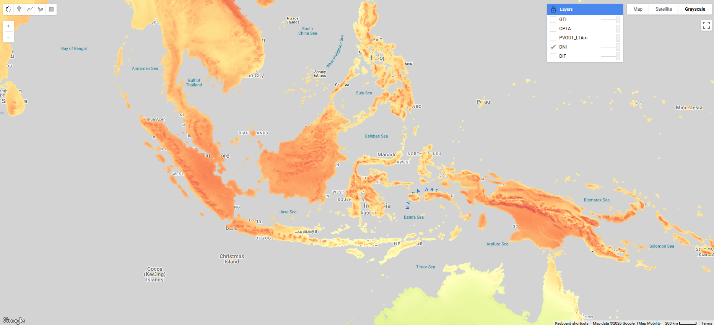
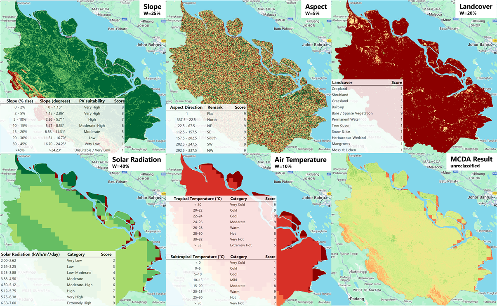
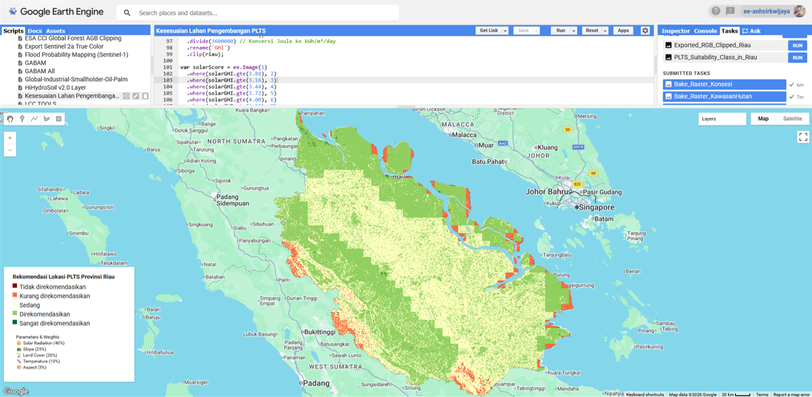

MCDA for Photovoltaic Potential Assessment (Site Suitability)
Mon 15 Dec 2025 • 16:19 GMT by Spatiality

Direct Normal Irradiance Distribution. Documentation by Spatiality
Selecting a suitable location for a solar power plant is not simply a matter of finding areas with high solar radiation. A practical site needs to consider several conditions at the same time, including solar radiation, temperature, slope, aspect, land use, accessibility, and distance to electricity infrastructure. Multi-Criteria Decision Analysis (MCDA) provides a useful way to bring these different factors together into one suitability map. A previous study in Indonesia applied GIS-based AHP-MCDA for solar power plant site selection and showed that combining energy resources, topography, land use, settlements, roads, electrical networks, and protected areas can substantially narrow down the most suitable locations.
Google Earth Engine (GEE) makes this type of analysis particularly practical because many of the required datasets can be accessed and processed within the same cloud-based platform. Elevation data can be used to derive slope and aspect, while climate datasets such as ERA5 can provide temperature and solar-radiation information. Satellite imagery can also be used to identify land-cover conditions, while other spatial datasets can represent roads, settlements, transmission lines, and restricted areas. Rather than downloading and processing every dataset locally, GEE allows these layers to be prepared, resampled, clipped to the study area, and combined through a single workflow. This is especially useful when the analysis covers a large area or several cities.
Methodology

Parameter Used in MCDA Analysis. Documentation by Spatiality
The analysis typically considers several criteria and constraints, including:- Solar Radiation: Photovoltaic potential vary for each location. Equatorial regions generally receive more direct solar radiation than higher latitudes.
- Air Temperature: Higher temperature is not suitable for installation and require higher cost for maintenance. Note that temperature in tropical regions may be more favorable for PV installation.
- Slope: Flat surface is considerably best for optimum radiation absorption, while steeper slopes may reduce efficiency.
- Aspect Slope: Slope plane orientation affect the intencity of radiation absorption. the study area position according to equator must take into account.
- Landcover: Some landcover act as barrier against incoming radiation. Specific water reservoir can be considered as a favorable location for solar panel installation.
The weighting should be based on the relative importance of each parameter. Some area or additional parameter might require more calibrated weights. In this case
The MCDA process generally starts by standardizing each parameter into a common suitability scale, for example from 1 (very unsuitable) to 8 (very suitable). The direction of suitability depends on the parameter. Areas with higher solar radiation may receive higher scores, while areas with steep slopes would receive lower scores. Temperature can also be treated as a suitability factor because high module temperatures can reduce PV efficiency. After standardization, each parameter is assigned a weight according to its relative importance, and the layers are combined using a weighted overlay such as: Suitability = Σ (weight × parameter score). In an AHP-based approach, the weights can be obtained through pairwise comparison, making the decision process more systematic rather than simply assigning arbitrary percentages. The reference study used this type of weighted spatial overlay and found that the combination of criteria and constraints greatly reduced the area considered suitable for solar power development.
The final output from GEE is a solar PV site-suitability map, typically divided into categories such as very low, low, moderate, high, and very high suitability. The map should be considered a screening and decision-support tool, rather than a replacement for detailed engineering and field surveys. Areas identified as highly suitable still need to be checked for land ownership, grid capacity, environmental restrictions, geotechnical conditions, flooding, access roads, and other project-specific requirements. Nevertheless, MCDA in GEE provides a relatively simple and reproducible way to screen large areas and identify where further investigation for a solar power plant or PLTS would be most worthwhile. The Indonesian study similarly demonstrated that considering infrastructure and environmental constraints can make the final suitable area much smaller than the area suggested by solar-resource availability alone.

Site Suitability for Solar PV Development. Documentation by Spatiality